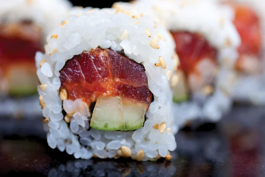

Home
Spicy Tuna Roll

Description
In restaurants, spicy tuna sushi rolls usually involve raw, s
ushi-grade fish. But if raw fish is out of reach, this recipe
uses humble canned tuna. That’s not to say you can’t use
the basic skeleton of this recipe for raw tuna—just substitute
in sushi-grade fish, finely chopped, and proceed onward!
An important part of making any type of sushi is finessing the
rice. Use a short-grain white rice and make it according to our
sushi rice instructions. Each grain should be pearly and separate
yet tacky enough to be handled with damp hands and pressed onto
your nori.
Ingredients
- 2 Persian cucumbers, peeled and julienned
- 1/2 tsp. rice wine vinegar
- 1/4 tsp. kosher salt
- 2 (5-oz.) cans tuna packed in water, drained
- 1/4 c. mayonnaise (preferably Kewpie)
- 3 tbsp. Sriracha
- 1 tsp. togarashi (optional)
- 6 nori sheets
- 4 c. prepared sushi rice, divided
- 1 avocado, sliced 1/3" thick
Black and white sesame seeds and thinly sliced scallions, for garnish
Steps
- In a medium bowl, toss cucumbers, vinegar, and salt.
In another medium bowl, mix tuna, mayonnaise, Sriracha,
and togarashi (if using).
- On a bamboo mat, lay 1 nori sheet. Using dampened hands, spread 2/3 c. rice evenly across 80% of the nori, leaving an uncovered border at end farthest from you. Working at end closest to you, arrange 3 tbsp. tuna mixture in a straight line horizontally on top of rice. Top tuna mixture with strips of cucumber and avocado.
- Lift bamboo mat from end closest to you and use it to guide edge of rice into a tight spiral. Squeeze firmly along mat to compact roll, then continue rolling in a spiral log to seal edge. Repeat with remaining ingredients.
- Let roll sit 10 minutes before slicing. Garnish with sesame seeds and scallions.